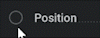
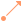
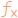

调制参数#
大多数参数都可以由外部调制节点控制。
如何调制参数#
假设我们想让球体持续上下移动。这可以用关键帧手动完成，但也可以使用  Mod: Oscillator 节点。
Mod: Oscillator 节点。

将 Position 参数的覆盖状态设置为 Pin Override，方法是
 单击其旁边的图标。
单击其旁边的图标。将
 Mod: Oscillator 节点连接到左侧现在暴露出来的引脚。
Mod: Oscillator 节点连接到左侧现在暴露出来的引脚。将 Waveform X 和 Y 设置为 None，这样只有 Z 位置会振荡。
根据需要调整 Oscillator 节点中的设置。
Node Details（节点详情）#
来看一下 Oscillator 的 Node Details（节点详情）。

输出#
Signal： 所创建波形的可视化表示。
在 Signal 显示区下方，是所有连接到  Mod: Oscillator 节点的参数列表。
Mod: Oscillator 节点的参数列表。
这些参数会以每个分量一个范围滑块的形式表示。
这里， Volume flow rate 只有一个分量，因此只有一个范围滑块，并且只会由 Waveform X 控制。
这些范围滑块可用于控制参数值映射到波形的方式。范围滑块中的 min 值是该参数可能的最低值， max 值是最高值。
例如，使用默认正弦波时，参数值会在范围滑块设定的值域内平滑上下振荡。这里， Position 参数可以在 -50 和 50 米之间振荡，而 Fuel rate 可以在 0 和 1500 百分比/秒的速率之间振荡。
更多关于范围滑块的用法，请查看我们的 范围滑块 页面！
Main（主要）#
Custom Waveform： 只有在选择 Custom（位于某个 Waveform 下拉菜单中）时，此图表才可见。此选项允许创建你能想到的任意波形。右键菜单中的 Curve Generator…（
 ）对于制作抖动正弦波之类的内容非常有用。更多关于调制曲线用法的信息，请查看我们的调制曲线页面！
）对于制作抖动正弦波之类的内容非常有用。更多关于调制曲线用法的信息，请查看我们的调制曲线页面！
Waveform X,Y,Z： 此下拉菜单包含不同类型的波形，它们决定数值振荡的模式。
Base： 偏移数值，可以增加或减少。
Frequency： 图案每秒重复的次数。值越高，数值变化越快。
Phase： 波形的时间偏移。
Amount： 波形强度。值越高，振荡后的数值偏离基础值越远。
Attenuation： 所有波形的强度乘数。
其他调制器#
所有调制器节点都使用三个值来表示 X、Y 和 Z 轴。
调制单值参数时，只会使用 X、A 或 1 输出。
调制颜色参数时， X、Y 和 Z 将代表 Red、Green 和 Blue
 Constant（常量）#
Constant（常量）#
生成一个数值不会随时间变化的信号。
当你想用同一个滑块控制多个参数时，这会很有用。
此调制器比较特殊，因为它具有 Mode 下拉参数，可用于选择最合适的控制类型。
Oscillator（振荡器）#
生成一个数值会沿指定波形变化的信号。
这可用于向项目中添加一些扰动，例如让参数以随机方式偏离其基础值。

Cycle（循环）#
{kind=link}
锯齿波形的一种版本。会重复执行从 -360 到 360。
这用于让某些内容持续旋转。
 Combine（组合）#
Combine（组合）#
此节点不会生成信号，而是以指定的数学方式组合多个信号。

Math（数学）#
{kind=link}
此节点有一个文本字段，你可以在其中编写自己的数学表达式来生成信号。
 Time Shift（时间偏移）#
Time Shift（时间偏移）#
不会生成信号，而是对传入信号进行时间偏移。
 ADSR#
ADSR#
ADSR 节点允许将特定参数映射到 ADSR 包络。
ADSR 代表 Attack（起音）、Decay（衰减）、Sustain（延音）、Release（释音）。ADSR 节点的 Active 复选框开启后，包络会被触发，并从 attack（起音）开始。Attack（起音）是指定参数的基础值到达峰值所需的时间，峰值由 Amount % 决定。Decay（衰减）是从峰值到 Sustain（延音）值所需的时间。Sustain（延音）是 Base 与 Amount 值之间的百分比；该值会保持不变，直到 ADSR 节点变为非活动状态。Active 二值开关关闭后，包络会进入 release（释音）。Release（释音）是 Sustain（延音）值返回 Base 值所需的时间。
此节点与 MIDI 节点结合使用时尤其有用。
 MIDI#
MIDI#
根据键盘等 MIDI 控制器上的按键操作生成信号。
要使用此功能，需要先勾选 Settings/Preferences/General/Enable MIDI support